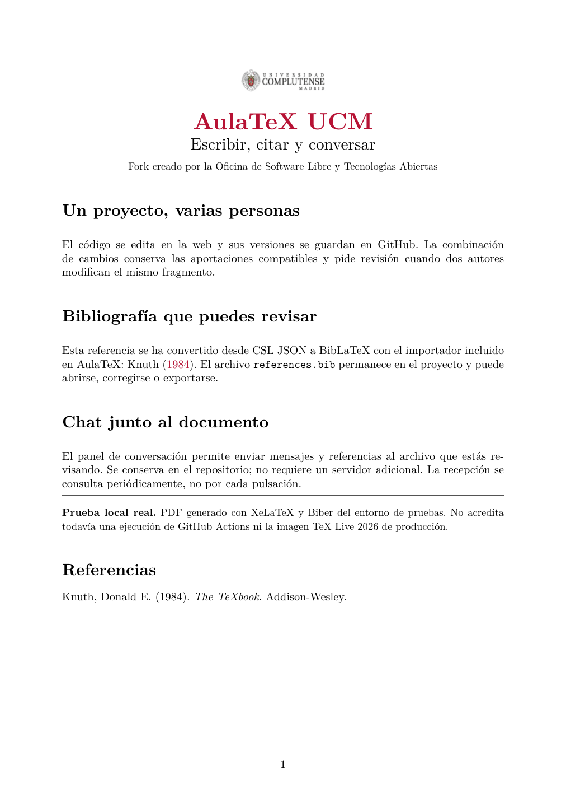

Saltar al editor
ESPACIO DE TRABAJOEspacio local · sin publicar
Bienvenida a AulaTeX UCM
Ejemplo: los cambios solo están en esta pestaña.
Ejemplo localRecepción de cambios cada 30 s cuando conectes GitHub.
Vista previaEJEMPLO
PDF de ejemplo precompilado. Conecta tu repositorio para generar el tuyo.
Vista local

Tu próximo PDF empieza aquí.Guarda el proyecto y pulsa Compilar. El código no sale de tu repositorio hacia un servidor propio.
Diagnóstico de compilación
No se ha solicitado ninguna compilación.
El token solo vive en memoria. Cierra sesión al terminar.
Listo. Explora el ejemplo o conecta tu GitHub.